01
물티슈의 한계
겉만 닦이고 방바닥엔 검은 발자국
물티슈 3~4장을 써가며 벅벅 문질러도, 발가락 틈새와 털 사이에 엉킨 까만 흙먼지는 그대로 남습니다. 결국 소파와 이불에 흙도장이 찍히고, 손에는 누런 오염물이 묻어납니다.
매번 번거롭고 힘들던 욕실 세척과 드라이기 건조는 이제 그만.
부드러운 일체형 실리콘 솔로 쓱 문지르고 마른 수건으로 닦아내면,
끈적임 없이 보송하고 깨끗한 발바닥으로 되돌아옵니다.
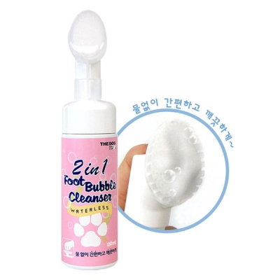
산책 뒤처리의 현실
산책을 마치고 현관에 들어서는 순간부터 시작되는 고민.
물티슈로 대충 닦자니 찝찝하고, 욕실로 안고 가자니 한숨부터 나오는 반려인의 일상입니다.
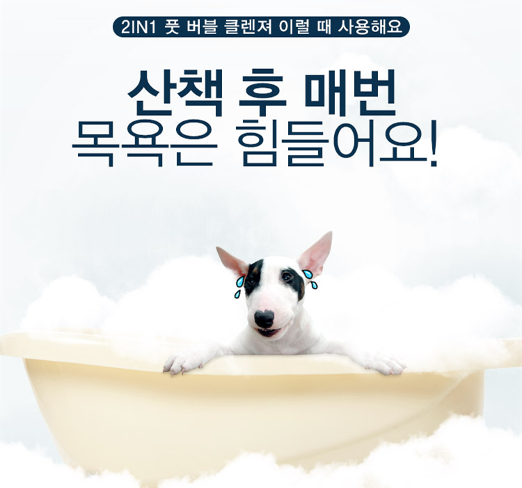
겉만 닦이고 방바닥엔 검은 발자국
물티슈 3~4장을 써가며 벅벅 문질러도, 발가락 틈새와 털 사이에 엉킨 까만 흙먼지는 그대로 남습니다. 결국 소파와 이불에 흙도장이 찍히고, 손에는 누런 오염물이 묻어납니다.
욕실 이동과 드라이기 건조의 번거로움
목욕을 싫어하는 아이를 안고 욕실로 가 물로 씻기고, 드라이기로 오래 말리다 보면 보호자도 아이도 지치게 됩니다. 하루 두 번 산책이면 욕실 정리까지 부담이 배가 됩니다.
짓무름과 핥는 습관의 시작
바쁜 출근길이나 피곤한 저녁, 발가락 사이 물기를 완벽히 말리지 못하면 꿉꿉한 습기가 차 짓무르기 쉽습니다. 강아지가 발바닥을 빨갛게 핥기 시작하면 마음이 더 무거워집니다.
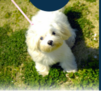
산책 후산책 후 반려견의 발 부분만 욕실 갈 필요 없이 현관에서 간편하게 세척할 수 있습니다.
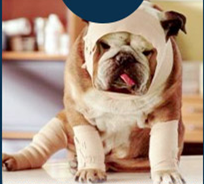
아플 때수술이나 접종, 피부염 등으로 물이 닿으면 안 되거나 전신 목욕이 어려운 아이의 국소 위생 관리에 적합합니다.
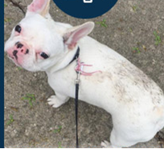
부분 오염 시반려견 몸이나 털에 흙탕물, 이물질이 묻었을 때 물을 뿌리지 않고 부분적으로 깨끗하게 세척할 수 있습니다.
더독의 2in1 솔루션
보호자의 손에 흙먼지를 묻히지 마세요.
부드러운 실리콘 솔 사이로 솟아오르는 풍성한 거품이 흙먼지를 감싸고, 마른 수건 한 장이면 30초 만에 보송하게 끝납니다.
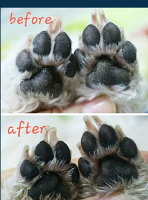
까맣게 엉겨 붙었던 흙먼지와 모래가 실리콘 솔과 미세 버블로 말끔하게 흡착 세정된 실제 모습
※ 실구매 고객 실사용 후기 사진 발췌 (개인차 있을 수 있음)
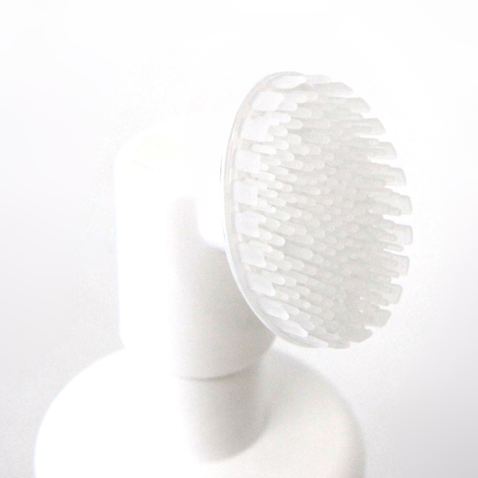
손가락으로 벌릴 필요 없이, 타원형 실리콘 브러시가 발바닥 패드 골짜기와 발가락 틈새 흙먼지를 부드럽게 긁어 모아줍니다.
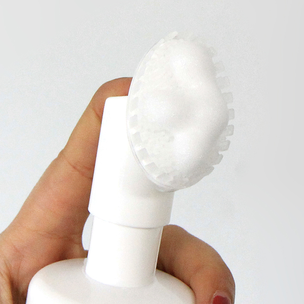
펌핑 즉시 브러시 중앙에서 토출되는 쫀득한 버블이 털 속 미세먼지와 세균성 오염을 감싸 안아 수건에 쏙 묻어나오게 만듭니다.
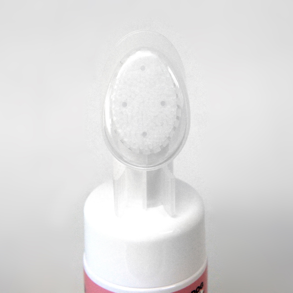
발을 닦인 후 더러워진 실리콘 솔은 헤드만 쏙 분리해 흐르는 물에 헹궈주면 언제나 새것처럼 깨끗하게 유지됩니다.
눈으로 확인하는 검증 자료
매일 살결에 직접 닿고 아이가 핥을 수도 있기에 성분 하나, 인증 하나까지 꼼꼼히 확인했습니다.
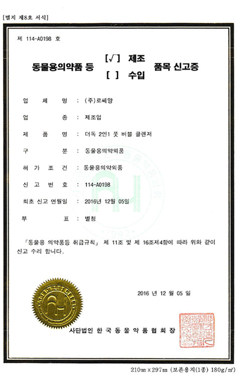
사람용 비누나 검증되지 않은 일반 세정제가 아닙니다. 물로 씻어내지 않아도 안심하고 사용할 수 있는 동물 전용 의약외품입니다.
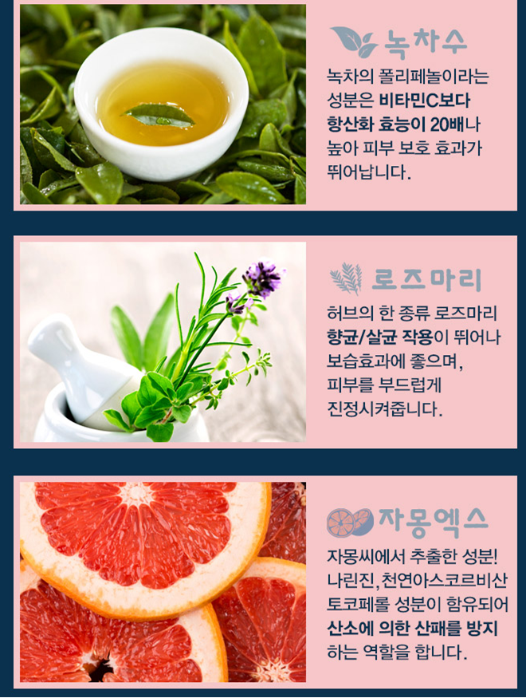
비타민C와 폴리페놀이 풍부하여 산책 중 자극받은 피부를 편안하게 진정
은은하고 상쾌한 허브 성분으로 위생 관리 및 건조함 완화
천연 유래 토코페롤 성분이 피부 산패를 방지하고 상큼한 자몽향 선사
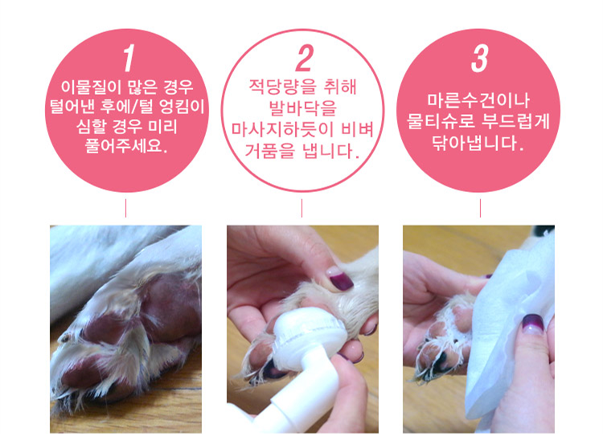
굵은 나뭇가지나 마른 흙 등 큰 이물질이 있다면 먼저 가볍게 털어줍니다.
실리콘 솔을 발바닥에 대고 적당량을 펌핑하여 틈새 사이를 마사지하듯 부드럽게 비벼줍니다.
잔여 거품이 남지 않도록 마른 수건이나 물티슈로 꼼꼼하게 닦아내면 보송한 발바닥 완성!
네이버 / 쇼핑몰 실구매 고객의 검증된 경험
"누르면 바로 거품이 나와서 쓰기 편하고, 매일 산책 다녀와서 쓰기 정말 좋아요."
"풋클렌저 유목민이었는데 이걸로 완전히 정착했어요. 벌써 두 번째 구매입니다."
"발 씻길 때마다 도망 다녔는데 이건 가만히 있네요. 만족스러워서 두 통째 쓰는 중입니다."
구매 전 궁금증 해결
구매 전 보호자님들이 가장 많이 확인하시는 질문을 모았습니다.
네, 안심하셔도 좋습니다. 더독 풋 버블 클렌저는 농림축산검역본부의 엄격한 기준을 통과한 동물용 의약외품(제114-A0198호)으로, 자극적인 화학 계면활성제 대신 코코넛 유래 세정 성분과 녹차수, 식물성 추출물을 사용했습니다. 닦아낸 후 발바닥을 가볍게 핥더라도 무해하도록 설계되었습니다.
물기 없는 젤 타입이 아닌 미세 거품 제형으로, 오염물과 함께 수건에 빠르게 흡수됩니다. 사용 후 마른 수건이나 마른 티슈로 거품 잔여물이 남지 않게 한 번 더 꾹꾹 눌러 닦아주시면, 끈적임 전혀 없이 보송보송하고 촉촉한 감촉만 남습니다.
브러시 헤드는 부드러운 일체형 실리콘 재질로 만들어져 있으며 손쉽게 탈부착이 가능합니다. 산책 후 발을 닦인 뒤, 실리콘 솔 헤드만 분리해 흐르는 미온수에 쓱 헹궈서 건조시켜 주시면 털이나 이물질 끼임 없이 언제나 위생적으로 반영구 사용이 가능합니다.
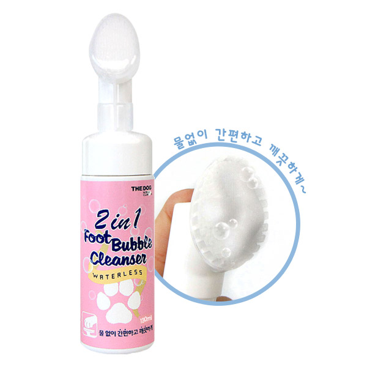
130ml × 2개 세트
[130ml 정품 2개 묶음 실속 구성 / 로켓배송으로 내일 도착]
현관에 하나, 산책 가방에 하나 두고 매일 산책 후 보송하게 관리하세요.
이 포스팅은 쿠팡 파트너스 활동의 일환으로, 이에 따른 일정액의 수수료를 제공받습니다.